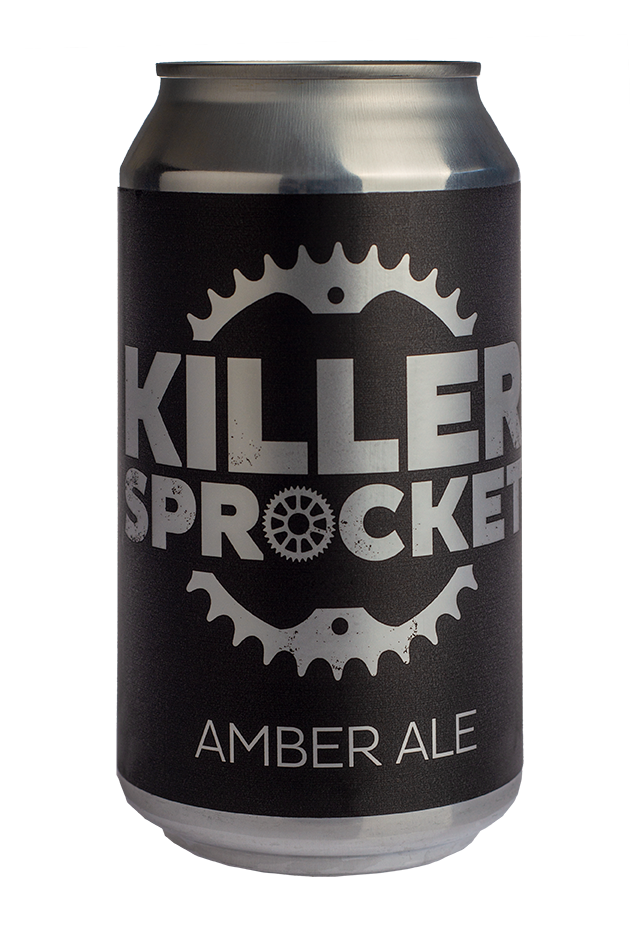
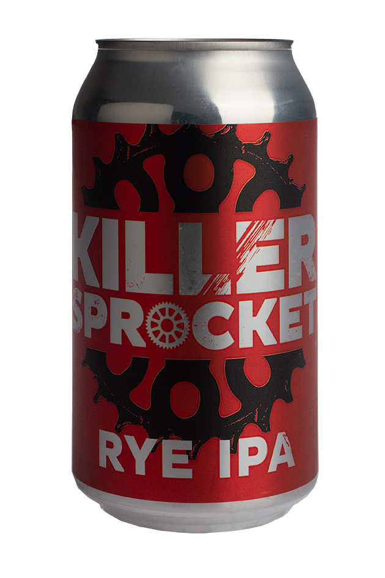
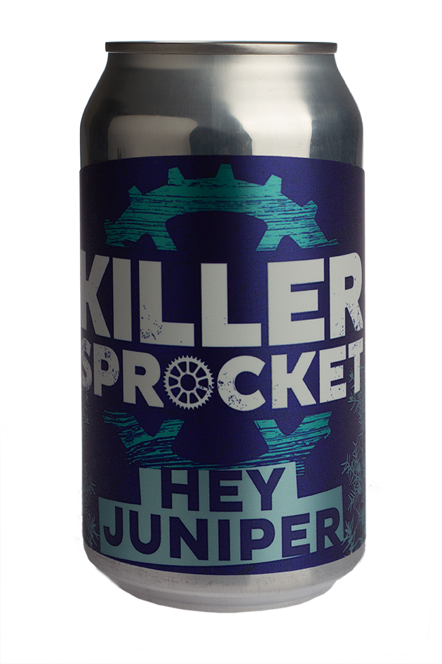
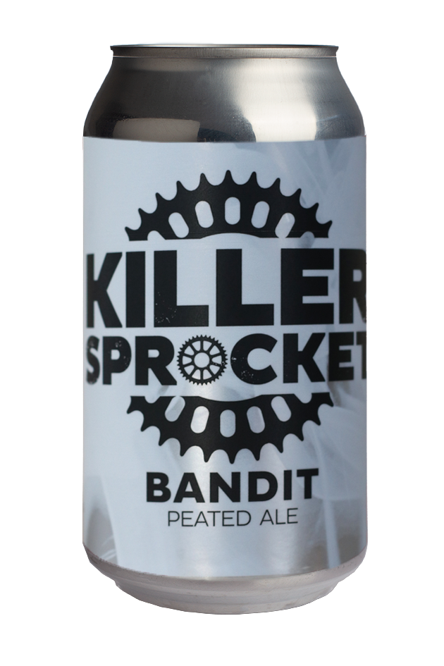

AMBER ALE
A Darker Shade Of Amber.

AWARDED
2014 Cbia Silver Medal - Amber Dark Ale
2014 Aiba Bronze Medal - Other Amber / Dark Ale
STYLE - American Amber Ale
ABV 4.8
IBU 27
MALTS - Pale, Munich, Crystal, Chocolate
HOPS - Cascade, East Kent Goldings, Amarillo
RYE IPA
India Pale Ale With Rye.

STYLE - Peated Ale
ABV - 5.6
IBU - 100
MALTS - Ale, Rye, Light Crystal
HOPS - Amarillo, Centennial,Warrior, Columbus
Sometimes you just want to turn everything up to 11.
This will not be for everyone but if you like rye malt and loads of hops you might just love it
HEY JUNIPER
American pale ale with juniper berries.

STYLE - American Pale Ale
ABV - 5.6
IBU - 100
MALTS - Ale, Vienna, Medium Crystal
HOPS - Amarillo, Cascade
I really enjoy the diversity of ingredients and flavours found in gin.
This beer was brewed with juniper berries to add that classic piney character.
BANDIT
Peated ale.

STYLE - peated ale
ABV - 4.8
IBU - 45
MALTS - Peated Malt, Pilsner, Vienna, Brown Malt
HOPS - Hallertau, Saaz, Chinook
Bandit was born from my desire to have a sessionable islay scotch whiskey. If you have not had a smoke beer before a great piece of advice is to hold off judgement until you have had 5 sips.